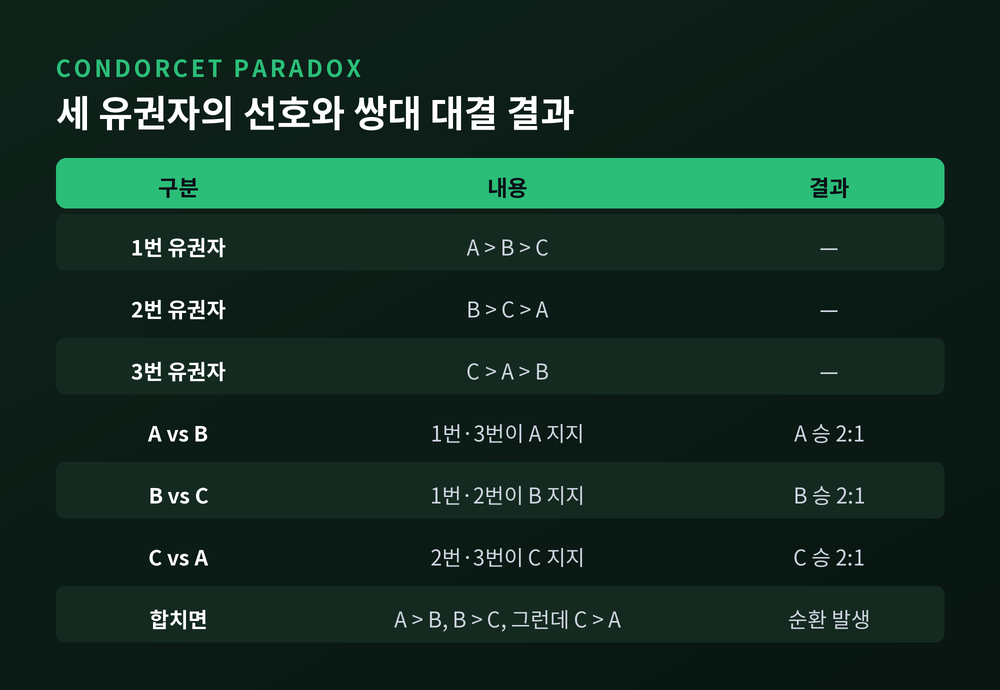
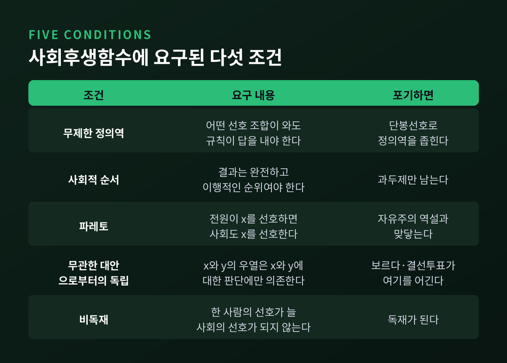
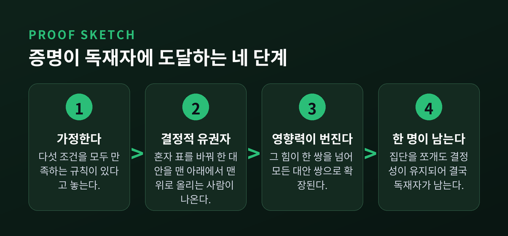
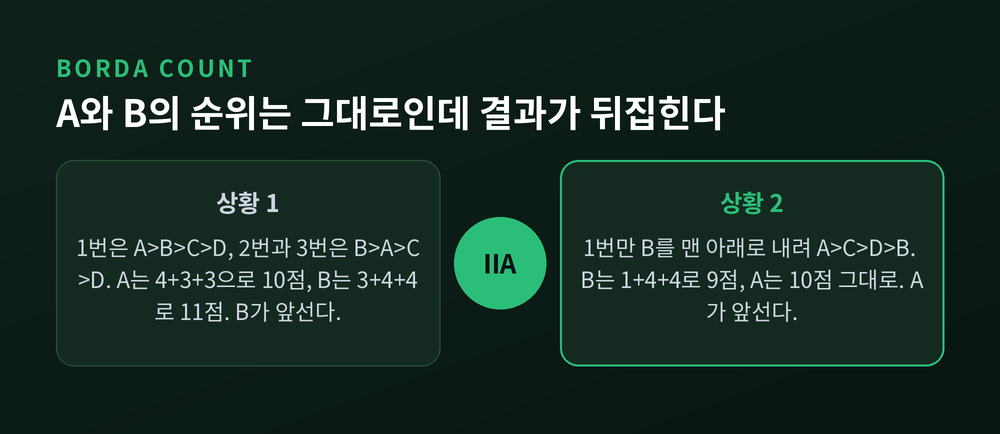
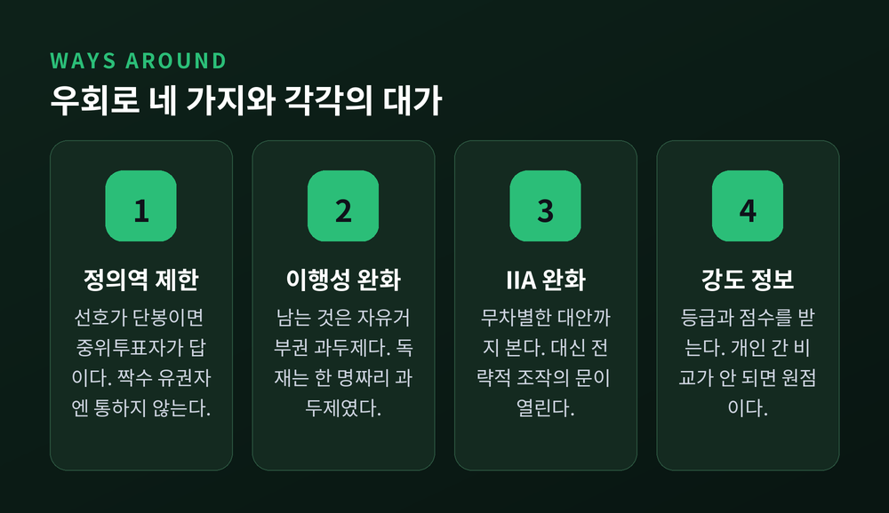

이번 글에서는 애로우의 불가능성 정리를 정리해 보겠습니다. 투표 제도를 아무리 정교하게 다듬어도 왜 어딘가는 반드시 어긋나는지, 그 이유를 수학이 어떻게 증명했는지 살펴봅니다. 순환 다수라는 오래된 역설에서 출발해 전략적 투표와 자유주의 역설까지 이어가겠습니다.
대안이 셋이고 유권자가 셋인 상황을 놓고 보겠습니다. 1785년 마르키 드 콩도르세가 발견한 사례입니다.
1번 유권자는 A, B, C 순으로 선호합니다. 2번은 B, C, A 순입니다. 3번은 C, A, B 순입니다.
이제 둘씩 짝지어 다수결에 부칩니다.
A와 B를 붙이면 1번과 3번이 A를 택합니다. A가 2대 1로 이깁니다. B와 C를 붙이면 1번과 2번이 B를 택합니다. B가 이깁니다. 여기까지는 A가 가장 낫다는 결론으로 보입니다.
그런데 C와 A를 붙이면 2번과 3번이 C를 택합니다. C가 A를 이깁니다.
A가 B를 이기고, B가 C를 이기는데, C가 다시 A를 이깁니다. 사회의 선택에 순환이 생긴 것입니다. 개인은 아무도 모순되지 않았습니다. 세 사람 모두 일관된 순위를 갖고 있습니다. 문제는 그 순위들을 합치는 과정에서 발생합니다.
원인은 단순합니다. 세 번의 대결에서 승리한 다수가 매번 다른 사람들로 구성되기 때문입니다. A를 밀어 올린 다수는 1번과 3번이고, B를 밀어 올린 다수는 1번과 2번입니다. 겹치지 않는 연합이 서로를 무효로 만듭니다.

이 순환이 불편한 이유는 따로 있습니다. 회의에서 안건을 어떤 순서로 붙이느냐에 따라 결론이 달라지기 때문입니다.
위 사례에서 A와 B를 먼저 붙이고 그 승자를 C와 겨루게 하면 최종 선택은 A입니다. 반대로 A와 C를 먼저 붙이고 그 승자를 B와 겨루게 하면 최종 선택은 B가 됩니다. 같은 선호, 같은 사람들인데 결론이 갈립니다.
경제학자 찰스 플롯은 이를 경로 독립성의 문제로 정식화했습니다. 표결 순서를 짜는 권한이 사실상 결정권이 되는 셈입니다.
콩도르세 역설은 어떤 특정 투표 방식 하나가 실패한 사건이 아니었습니다. 여러 사람의 선호를 하나로 모은다는 발상 자체에 걸린 문제였습니다.
케네스 애로우는 문제를 뒤집어 물었습니다. 어떤 방식이 실패하는지 하나씩 확인하는 대신, 집계 규칙이 마땅히 갖춰야 할 성질부터 적어 놓고 그것을 다 만족하는 규칙이 있는지 물은 것입니다.
애로우는 개인의 선호 순위 목록을 받아 사회 전체의 순위를 내놓는 함수를 상정했습니다. 그는 이것을 헌법이라 부르기도 했습니다. 그리고 다섯 가지를 요구했습니다.
다섯 항목 어느 것도 무리한 요구로 보이지 않습니다. 오히려 최소한의 상식에 가깝습니다.

애로우가 증명한 것은 이렇습니다.
대안이 셋 이상이면, 이 다섯 조건을 동시에 만족하는 사회후생함수는 존재하지 않습니다.
바꿔 말하면 앞의 네 조건을 지키는 집계 규칙은 반드시 독재적이 됩니다. 어느 한 사람의 선호가 그대로 사회의 선호가 되는 구조를 피할 수 없습니다.
그가 이 결과를 낸 것은 아직 대학원생 시절이었습니다. 1950년 논문으로 처음 발표했고, 이듬해 『사회적 선택과 개인의 가치』로 묶었습니다. 오늘날 표준으로 통하는 조건 서술은 1963년 제2판에서 그가 다시 정리한 것입니다. 1972년에 노벨경제학상을 받았습니다.
정작 애로우 본인은 이것을 불가능성 정리라 부르지 않았습니다. 일반 가능성 정리라고 불렀습니다.
증명의 뼈대는 어렵지 않게 그려집니다. 존 지너코플로스가 2005년에 제시한 짧은 증명들이 특히 명료합니다. 그는 혼자 표를 바꿔 어떤 대안을 사회적 순위의 맨 아래에서 맨 위로 끌어올릴 수 있는 유권자를 상정합니다. 이런 사람이 반드시 존재하고, 그의 영향력이 한 쌍의 대안을 넘어 모든 쌍으로 번져 나간다는 것이 논증의 핵심입니다.

애로우의 정리가 매서운 이유는 이론에서 끝나지 않기 때문입니다. 우리가 쓰는 제도들은 저마다 어딘가를 포기하고 있습니다.
쌍대 다수결은 무관한 대안으로부터의 독립을 완벽하게 지킵니다. 두 후보의 우열을 가릴 때 다른 후보를 볼 필요가 전혀 없기 때문입니다. 대신 이행성을 잃습니다. 앞서 본 순환이 그 대가입니다.
보르다 계산법은 반대편을 택합니다. 순위마다 점수를 매겨 합산하므로 순환은 생기지 않습니다. 그런데 무관한 대안으로부터의 독립을 어깁니다.
후보 네 명과 유권자 세 명으로 확인해 보겠습니다. 1위 4점, 2위 3점, 3위 2점, 4위 1점을 줍니다.
첫 번째 상황에서 1번 유권자는 A, B, C, D 순, 2번과 3번은 B, A, C, D 순으로 표를 던집니다. A는 4+3+3으로 10점, B는 3+4+4로 11점입니다. B가 앞섭니다.
두 번째 상황에서 1번 유권자만 B를 맨 아래로 내려 A, C, D, B 순으로 바꿉니다. B는 1+4+4로 9점이 됩니다. A는 여전히 10점 그대로입니다. 이제 A가 앞섭니다.
세 유권자 누구도 A와 B 사이의 순위는 바꾸지 않았습니다. 그런데 사회적 순위가 뒤집혔습니다. B에 대한 평가만 움직였을 뿐인데 A와 B의 우열이 달라진 것입니다.
이 성질은 보르다만의 결함이 아닙니다. 단순다수제, 결선이양투표, 콩도르세 방식까지, 파레토 조건을 지키는 순위형 방식들은 무관한 대안으로부터의 독립을 만족하지 못합니다.
결선이양투표에는 또 다른 취약점이 알려져 있습니다. 단조성 위반입니다. 어떤 후보를 더 높이 올려준 표가 오히려 그 후보를 떨어뜨릴 수 있습니다. 탈락 순서가 바뀌면서 최종 대결 구도 자체가 달라지기 때문입니다. 2022년 미국 알래스카 하원 선거가 이런 구조를 보여준 사례로 분석된 바 있습니다.

무관한 대안으로부터의 독립을 포기하면 곧바로 다른 문제가 따라옵니다. 조작의 여지입니다.
앞의 보르다 사례를 다시 보시면 알 수 있습니다. 1번 유권자는 B를 실제로 얼마나 싫어하든 상관없이, B를 맨 아래로 내리는 것만으로 자기가 선호하는 A를 1위로 만들 수 있었습니다. 정직하게 투표하지 않을 유인이 제도 안에 내장되어 있습니다.
앨런 기브바드와 마크 새터스웨이트는 1970년대에 이 문제를 각자 독립적으로 정리했습니다. 결론은 애로우의 정리만큼 단호합니다.
대안이 셋 이상일 때, 만장일치성과 비독재성을 갖춘 어떤 결정론적 투표 규칙도 전략내성적일 수 없습니다. 항상 적어도 한 명은 자기 선호를 거짓으로 표명해 이득을 볼 수 있습니다. 예외는 독재이거나, 애초에 일부 선택지를 당선 불가능하게 막아둔 경우뿐입니다.
흥미로운 것은 보르다 본인의 반응입니다. 자기 방식이 조작될 수 있다는 지적을 받자 그는 분개하며 답했다고 전합니다. "내 방식은 정직한 사람들을 위한 것이다." 13세기에 같은 방식을 제안한 라몬 유와 15세기에 이를 권한 니콜라우스 쿠자누스는 투표 전에 진실을 말하겠다는 엄숙한 선서를 하도록 했습니다.
제도 설계자들은 오래전부터 이 문제를 알고 있었던 셈입니다. 다만 선서로 막을 수 있는 문제가 아니었습니다.
애로우의 정리에는 나란히 놓이는 결과가 하나 더 있습니다. 아마르티아 센이 1970년에 발표한 자유주의 역설입니다.
센이 요구한 것은 두 가지뿐이었습니다. 파레토 조건, 그리고 최소한의 자유주의입니다. 적어도 두 사람에게는 각자의 사적인 영역에 대해 스스로 결정할 권한이 있어야 한다는 요구입니다.
센이 든 예시는 유명합니다. 사회에 두 사람이 있습니다. 한 사람은 문제의 소설을 즐겨 읽는 쪽이고, 다른 한 사람은 그 책이 외설적이라 폐기해야 한다고 봅니다. 선택지는 셋입니다. 앞사람이 읽거나, 뒷사람이 읽거나, 아무도 읽지 않고 없애거나.
책을 좋아하는 사람은 자기가 읽는 것보다 고지식한 상대가 억지로 읽는 쪽을 더 즐거워합니다. 반대로 고지식한 사람은 폐기를 최선으로 보되, 굳이 누군가 읽어야 한다면 차라리 자기가 읽겠다고 여깁니다.
각자의 사적 결정권을 존중하고 만장일치를 존중하면, 사회적 선호는 다시 순환에 빠집니다. 센의 결론은 이렇습니다. 자유주의적 가치를 지키려는 사람이라면 파레토 최적성에 대한 집착을 놓아야 할지 모른다는 것입니다.
여섯 쪽 남짓한 논문이었습니다. 그 짧은 글이 애로우와 나란한 제2의 불가능성 정리로 평가받습니다.
애로우의 불가능성 정리를 두고 흔히 이렇게 요약합니다. 너무 적은 정보로 너무 많은 것을 하려 한 결과라고요. 그렇다면 길은 두 갈래입니다. 덜 요구하거나, 정보를 더 쓰거나.
첫째, 정의역을 제한합니다. 사람들의 선호가 아무렇게나 흩어져 있지 않고 하나의 공통 축 위에 정렬되어 있다면 이야기가 달라집니다. 모두가 같은 기준에 대해 각자의 이상점을 갖고, 그 지점에서 멀어질수록 선호가 낮아지는 구조를 단봉선호라 부릅니다. 던컨 블랙은 1948년에 유권자 수가 홀수이고 선호가 단봉이면 쌍대 다수결이 언제나 온전한 순위를 낸다는 것을 증명했습니다. 그리고 그 최상위는 언제나 중위투표자의 이상점입니다.
다만 한계가 분명합니다. 유권자 수가 짝수면 성립하지 않습니다. 무엇보다 현실의 선호가 단봉이라는 보장이 없습니다. 여러 쟁점이 얽히면 축은 하나로 정리되지 않습니다.
둘째, 이행성을 완화합니다. 강한 선호만 이행적이면 되고 무차별은 이행적이지 않아도 된다고 풀어주는 방식입니다. 그런데 앨런 기브바드가 보인 결과는 냉담합니다. 이렇게 풀어주면 남는 것은 자유거부권 과두제뿐입니다. 소수의 과두 집단이 있어서, 전원이 찬성하면 사회도 찬성하고 한 명이라도 반대하면 사회는 결코 움직이지 않는 구조입니다. 애로우가 말한 독재란 한 명짜리 과두제였을 뿐입니다.
셋째, 무관한 대안으로부터의 독립을 느슨하게 합니다. 두 대안의 사회적 우열을 판단할 때, 각 개인이 그 대안들과 무차별하게 여기는 다른 선택지들까지 참고하도록 허용하는 방식이 제안되어 있습니다.
넷째, 강도 정보를 받습니다. 순위 대신 등급이나 점수를 받는 방식입니다. 승인투표와 범위투표, 그리고 중앙값을 기준으로 삼는 다수결 판정이 여기에 속합니다. 애로우 자신도 후년의 인터뷰에서 이 가능성을 인정했습니다. 유권자가 순위만 매기는 것이 아니라 "이건 좋다, 이건 나쁘다"고 등급을 말한다면 투표의 성격 자체가 달라진다고 했습니다.
여기서도 조건이 붙습니다. 센이 보인 바에 따르면 기수적 효용을 도입하는 것만으로는 부족합니다. 개인 간에 그 강도를 비교할 수 있어야 합니다. 내가 매긴 5점과 당신이 매긴 5점이 같은 무게라는 보장이 없다면, 등급 정보는 순위 정보 이상을 담지 못합니다. 그 순간 애로우의 결론이 다른 얼굴로 되돌아옵니다.

해석은 갈립니다.
강하게 읽는 쪽은 윌리엄 라이커입니다. 인민의 의지에 따른 통치로서의 민주주의는 정합적이지 않은 환상이라고 보았습니다.
온건하게 읽는 쪽은 다르게 봅니다. 정리가 말하는 것은 완벽한 규칙이 없다는 것이지, 모든 규칙이 똑같이 나쁘다는 것이 아닙니다. 애로우 자신도 다섯 조건을 논리학의 공리 같은 것으로 여기지 않았습니다. 그는 이것들을 가치판단이라 불렀습니다.
비독재라는 이름부터가 오해를 부릅니다. 늘 옆자리 사람의 의견을 그대로 따라 하는 위원이 있다면, 다수결은 그를 애로우적 의미의 독재자로 만듭니다. 그러나 그는 지도자가 아니라 추종자이고, 그 다수결은 지극히 민주적입니다. 기술적 정의와 정치적 함의는 다른 층위에 있습니다.
예전에는 좋은 제도를 찾으면 문제가 풀린다고 여겼습니다. 지금은 무엇을 포기할지 고르는 일이 제도 설계의 본질임을 압니다. 그것이 애로우가 남긴 자리입니다.
정리하면 이렇습니다.
애로우의 불가능성 정리는 다수결을 부정하는 정리가 아닙니다. 어떤 집계 방식도 우리가 상식이라 여기는 조건들을 전부 지킬 수는 없다는 사실을 확인해 준 결과입니다. 순환을 막으려면 무관한 대안의 영향을 받아들여야 하고, 그것을 받아들이면 전략적 조작의 문이 열립니다. 자유를 보장하려 하면 만장일치와 부딪힙니다.
그래서 남는 질문은 하나로 좁혀집니다 — 어느 조건을 얼마나, 어떤 이유로 양보할 것인가.
완벽한 제도를 설계할 수 있느냐고 물으신다면, 그럴 수 없다고 답하겠습니다. 다만 무엇을 포기하고 있는지 알고 쓰는 제도와, 모른 채 쓰는 제도는 전혀 다른 것입니다.